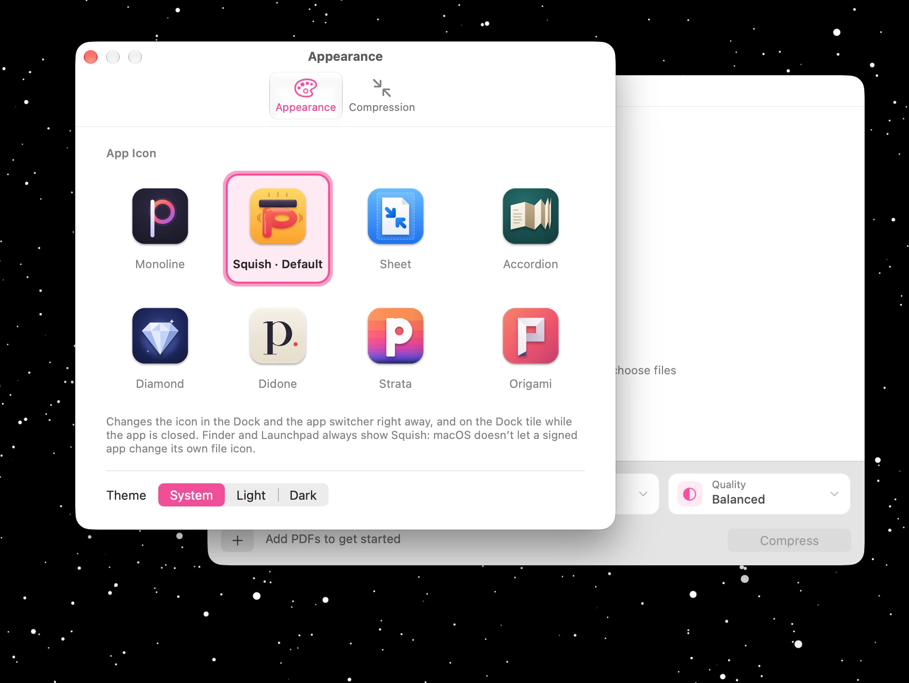
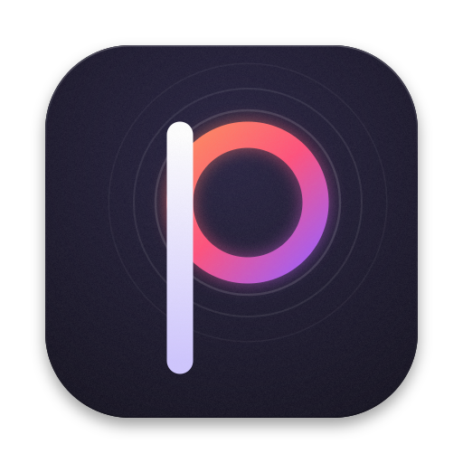
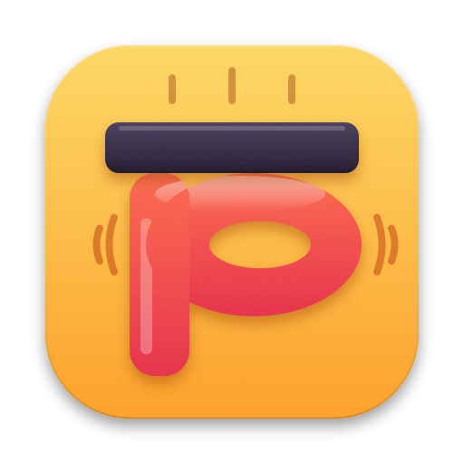
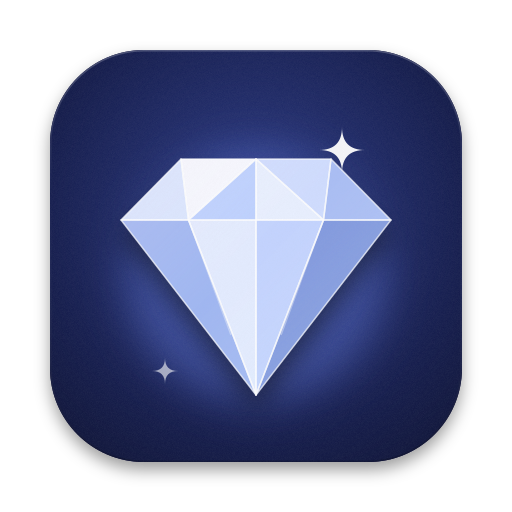
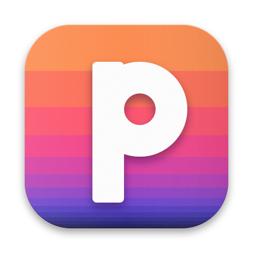
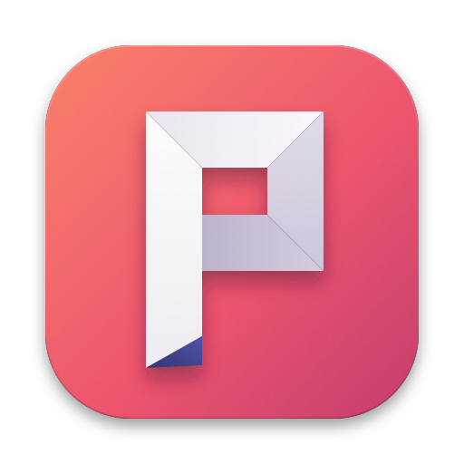
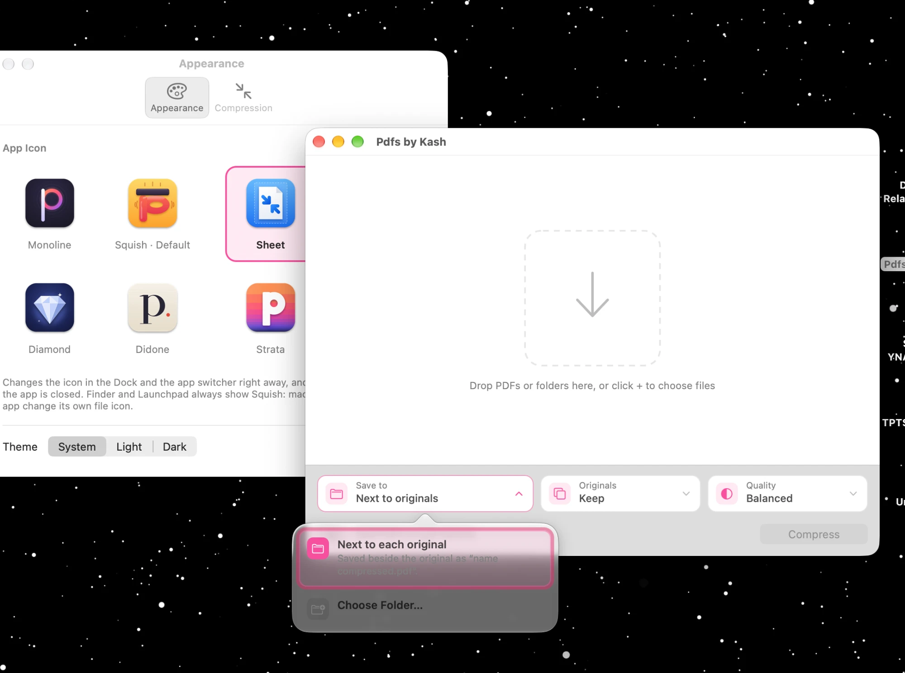

Pdfs by Kash · Settings and design alignment
Your current build sits next to the corrected design. Settings shrinks to the app icon and the theme. Every colour, border, focus ring and hover treatment comes from one set of design values (bottom of the page), which match the approved direction A mockups. Nothing reads the macOS system accent any more.
Settings: icon and theme only
One small window titled “Settings”, with no tabs and no prose. The selected icon gets the soft indigo ring and tint. Squish is selected on first launch, so it needs no “Default” label. No tooltips, and no hover highlight on the icons. The theme uses the same chip control as everywhere else.
Now · pink system accent, thick focus glow, tabs, three lines of prose

Proposed · light

Monoline
Squish
Diamond
Strata
OrigamiProposed · dark, Strata chosen
Keyboard focus · a thin ring, only when you Tab to an icon (never on a mouse click)
Option panel: opaque and always readable
The system's see-through panel picks up whatever is behind the window, and over a dark desktop it made the selected card unreadable. The corrected panel is a solid card with a hairline border and a soft shadow, in light and dark, and each option keeps at most one short line of text.
Now · the translucent panel over a dark desktop; the selected text disappears

Proposed · the same busy desktop, light and dark panels
Main window: built to the approved mockup
These frames are copied unchanged from the approved direction A page, which is the target. Indigo replaces pink, the bottom bar returns to the lavender-tinted surface, and the tiles, option cards and Compress button match the mockup exactly. Option texts get shorter to match the leaner Settings.
Keep · default
Replace · destination tile greys out in place, nothing reflows
Interaction · click Originals: option cards explain the choice, no tooltip needed
Now · for comparison
One set of design values
Colour (light · dark)
#5B4EE8#8F87FF
Accent tint · selected cards and icons#EEECFD#26235C
Warning · Replace, “Will replace the original”#C2620A#FFB35C
Bottom bar · tiles and footer surface#F7F6FB#1D1C36
Hairline · every border and divider#E8E6F1#2B2950
Success · completed, ↓ %#2F8A3C#8BDC7A
Shape, focus, motion
- Borders: one 1 px hairline everywhere; selection adds a 1.5 px accent ring at 40% opacity.
- Corners: tiles and cards 10 px, icon tiles 12 px, small controls 7–8 px.
- Focus: a 2 px accent ring at 55%, only for keyboard focus. Clicking never shows it.
- Hover: only on things that open or act (tiles, rows, cards), with a 120 ms fade. Icons in Settings don't react.
- Tooltips: wait 1 s. Only for full paths and icon-only buttons; none in Settings.
- Text: labels only. Option cards get one short line at most. No paragraphs.
What moves where
| Setting | Now | Proposed |
|---|---|---|
| App icon | Settings › Appearance | Settings (the main reason it exists) |
| Theme | Settings › Appearance | Settings |
| Quality, Save to | Main window and Settings › Compression | Main window only; remembered for next launch |
| Originals | Main window and Settings | Main window only; every launch starts on Keep, so a one-off Replace never carries over |
| Show in Finder when done | Settings | Removed; every finished row already has a Finder action |